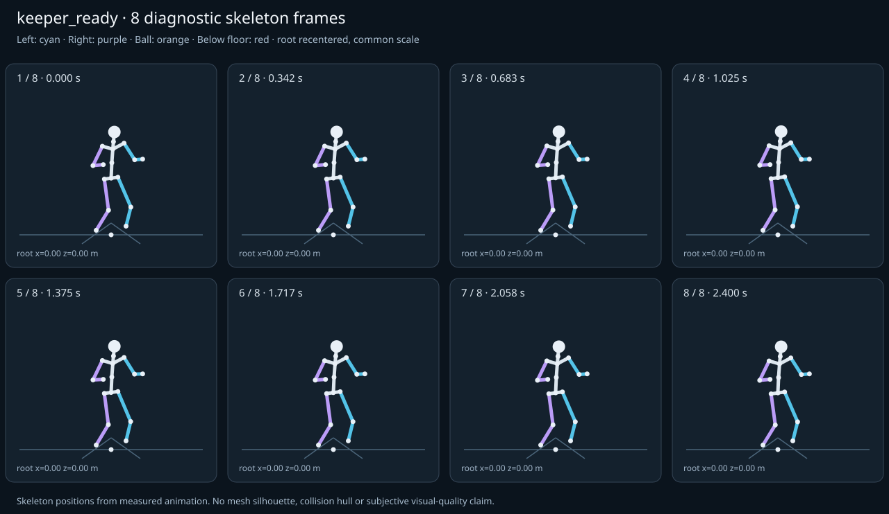

כל המדידות · תצוגת התנועה · JSON מקורי
ציון 100 · כיסוי 100%
עמידת ייחוס באותו תפקיד: keeper_ready. תרחיש השחקן החיצוני מיושם פעם אחת.

| מדד | מצב | ערך | ציון | ראיות |
|---|---|---|---|---|
| החלקת רגליים | ירוק | 0 | 100 | ראיות מקוריות{
"coordinateSpace": "Native GLB plus declared external actor position and heading, applied once.",
"supportSource": "declared",
"windows": 2,
"samples": 578,
"maxDriftMeters": 0,
"p95SpeedMetersPerSecond": 0.000002,
"worst": {
"bone": "LeftFoot",
"t": 0.8,
"start": 0,
"end": 2.4,
"driftMeters": 0
}
} |
| חדירה לרצפה | ירוק | 0 | 100 | ראיות מקוריות{
"samples": 5780,
"floorY": 0,
"probeKind": "declared sole probes plus skeletal joint centers (no mesh surfaces)",
"maxDepthMeters": 0,
"worst": {
"t": 0,
"bone": "LeftFoot",
"depthMeters": 0,
"y": 0.004
}
} |
| קפיצות פוזה | ירוק | 0.003486 | 99.93 | ראיות מקוריות{
"adjacentPairs": 288,
"observations": 4896,
"maxDegrees60Hz": 0.052294,
"maxMarkerStepHeight60Hz": 0.000077,
"maxRootStepHeight60Hz": 0,
"worst": {
"ratio": 0.0034862340562633767,
"t": 0.575,
"previousTime": 0.566667,
"bone": "Head",
"markerStepHeight60Hz": 0.000077,
"degrees60Hz": 0.052294
}
} |
| חריגות אנטומיות | ירוק | 0 | 100 | ראיות מקוריות{
"testedFrames": 289,
"affectedFrames": 0,
"checks": 4913,
"maxLimbFlexionDegrees": 101.029672,
"maxRelativeSegmentLengthChange": 0,
"hingeDirectionChecked": true,
"axialTwistChecked": false,
"violations": []
} |
| מגע בכדור | לא חל | — | — | ראיות מקוריות{} |
| כניסה ויציאה מול המתנה | ירוק | 0 | 100 | ראיות מקוריות{
"entry": {
"ratio": 2.342735557825747e-8,
"t": 0,
"idleTime": 0,
"markers": 17,
"rmsPositionHeight": 0,
"rmsRotationDegrees": 0.000001,
"rmsVelocityHeightPerSecond": 0,
"velocityEvaluated": true
},
"exit": {
"ratio": 4.057737014852409e-8,
"t": 2.4,
"idleTime": 2.4,
"markers": 17,
"rmsPositionHeight": 0,
"rmsRotationDegrees": 0.000001,
"rmsVelocityHeightPerSecond": 0,
"velocityEvaluated": true
},
"worstEndpoint": "exit",
"alignment": "horizontal root translation; raw asset poses used when provided"
} |
| מהירות גוף מול צעדים | לא חל | — | — | ראיות מקוריות{} |
| סימטריה | ירוק | 0 | 100 | ראיות מקוריות{
"mode": "structural",
"modeSource": "declared",
"structuralMismatch": 0,
"segments": [
{
"segment": "Arm-ForeArm",
"mismatch": 0
},
{
"segment": "ForeArm-Hand",
"mismatch": 0
},
{
"segment": "UpLeg-Leg",
"mismatch": 0
},
{
"segment": "Leg-Foot",
"mismatch": 0
}
],
"motionRmsHeight": null,
"worstMotion": null,
"bilateralPoseRmsHeightUnscored": 0,
"note": "One-sided authored actions are checked for structural symmetry only."
} |